Книга памяти
Салтыковская гимназия
Мы помним и храним истории наших родных, прошедших войну. Этот сайт — живая память о ветеранах, чьи судьбы связаны с нашей гимназией.
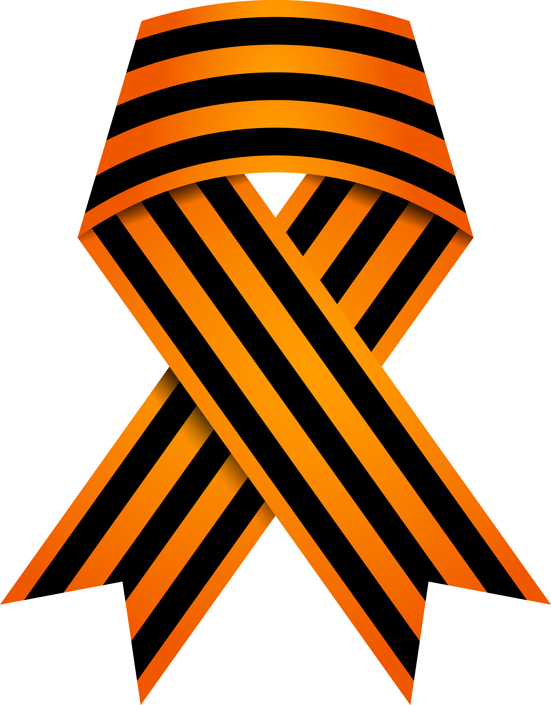
Чубиряев Александр Леонтьевич
Кузнецова Мария
03.07.1918 – 1988
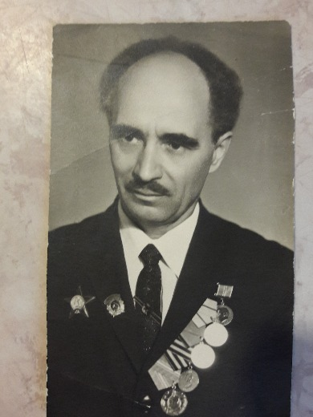
'">Швед Григорий Петрович
Юрченко Юлия
Год рождения: 1919
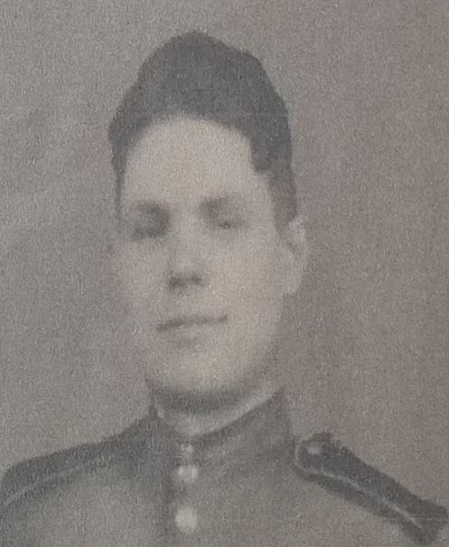
'">Сидоров Юрий Николаевич
Зачиняева Екатерина
Год рождения: 05.03.1927
Ефимов Павел Трофимович
Губарев Павел
Год рождения: 30.06.1922
Коваленко Дмитрий Лукич
Коваленко Стефания
Год рождения: 04.03.1927г.
Елев Анатолий Михайлович
Светачев Егор
1925-1956 гг.
Фролов Федор Григорьевич
Фролова Алиса
Год рождения: 07.03.1919-март 2001 года.
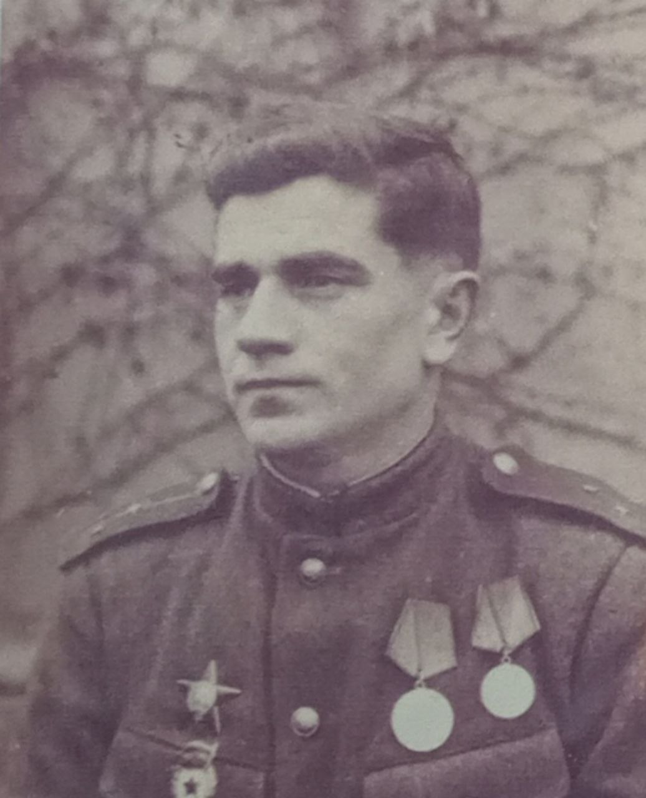
'">Погорелко
Николай Иустинович
Гордеев Павел
1915-1998 гг.
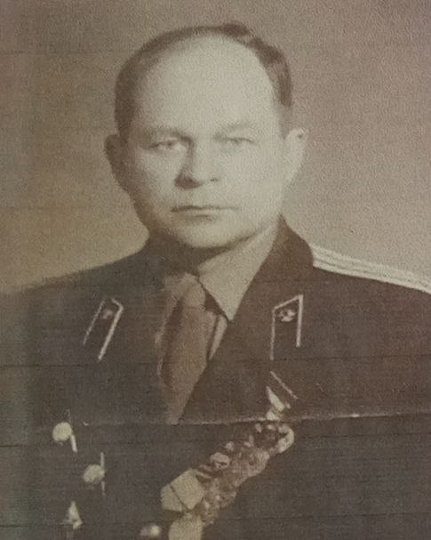
'">Орехов Дмитрий Александрович
Вертелецкая Мария
Год рождения: 26.04.1920
Мансуров Тамендар
Донаева Мадина
Год смерти: 14 июля 1944 года
Пригорнев Николай
Андреевич
Ефремов Андрей
Год рождения:1926
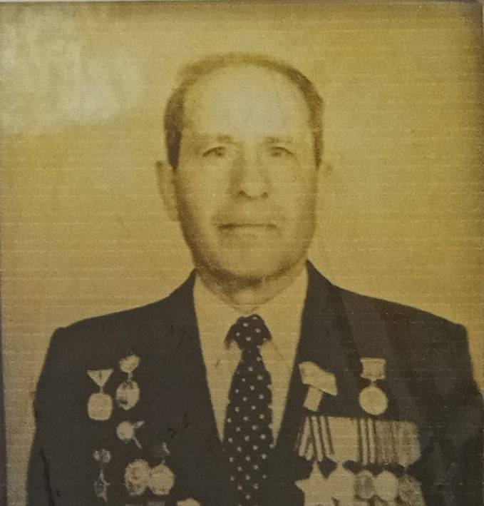
'">Якубов Рустам Якубович
Годзоев Арсен
31.12.1923 - 15.03.2013
Бойко Виктор Трофимович
Сысоева Валерия
год рождения:1914
Капралов Иван Алексеевич
Попов Владислав
Дата рождения:1916 г.
Иваночкин
Сергей Иванович
Новикова Юлия
Дата рождения:1921 г.
Четверик Надежда Ивановна
Кравченко Мария
-
Островская Прасковья
Филипповна
Островский Александр
Впишите годы (например, 1921 –)
Король Алексей Петрович
Король Владлена
Год рождения: 1924
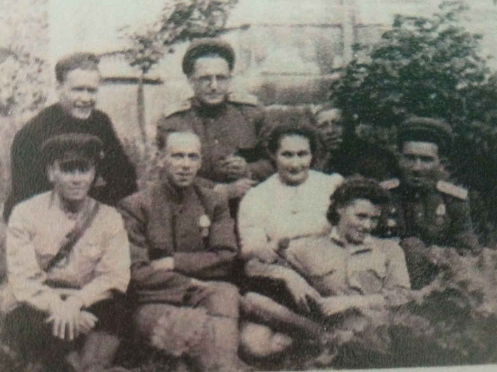
'">Кицис Семён Маркович
Кравченко Мария
Год рождения: 1907
Рязанцев Дмитрий Михайлович
Капитанов Александр
Год рождения: 18 сентября 1907
Посанчуков Константин Ермолаевич
Посанчукова Мария
Год рождения: 1925
Лях Илья Ефимович
Лях Елизавета
Год рождения: 06. 01. 1920
Корнеев Иван Ефимович
Абрамкина Диана
Год рождения: 1910 г.
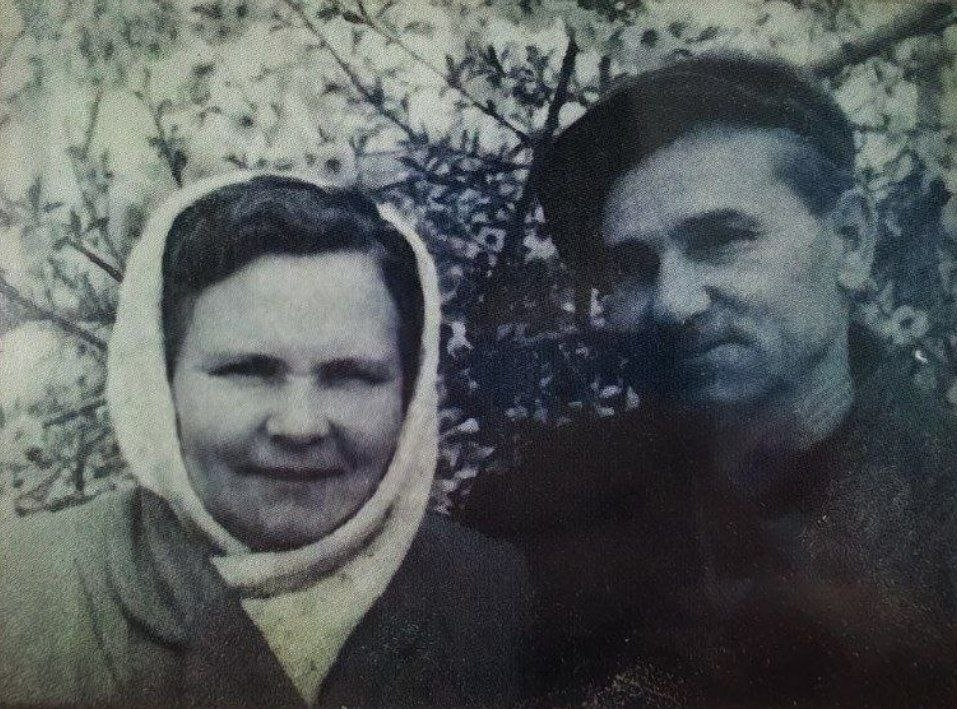
'">Григорьев Александр Васильевич и Мешкова Мария Дмитриевна
Колодин Денис
Годы рождения:1915 г.(Григорьев Александр Васильевич),1919 г.(Мешкова Мария Дмитриевна)
Недбайло Михаил Иванович
Шабанова Алина
Год рождения: 07.11.1908
Пасихин Иван Федорович
Борисова Елена
Год рождения: 1922
Левов Константин Алексеевич
Давыдова Анастасия
Год рождения: 1904 г.
Юрин Тимофей
Никифорович
Новгородов Виктор
Год рождения: 1916 г.
Деликов Эрдни Тельджиевич
Катаев Эрдни
Год рождения: 22.22.1922
Панфилов Николай Дмитриевич
Попов Вадим, Попов Виталий
Год рождения: 28.12.1926 год
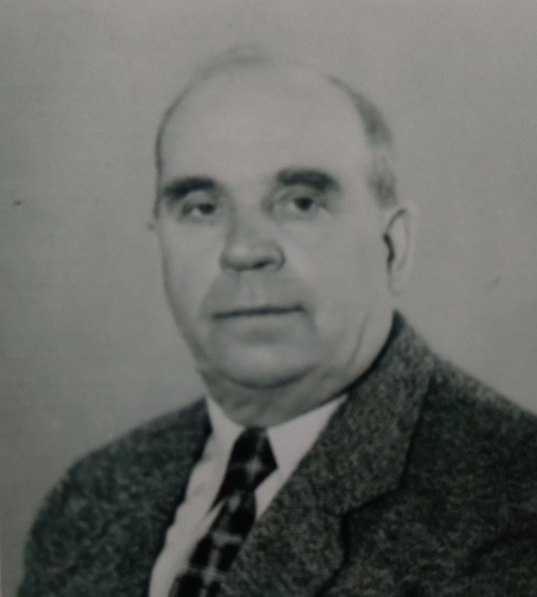
'">Нелюбов Трофим Иванович
Чуракова Мария
Год рождения: 15.04.1913
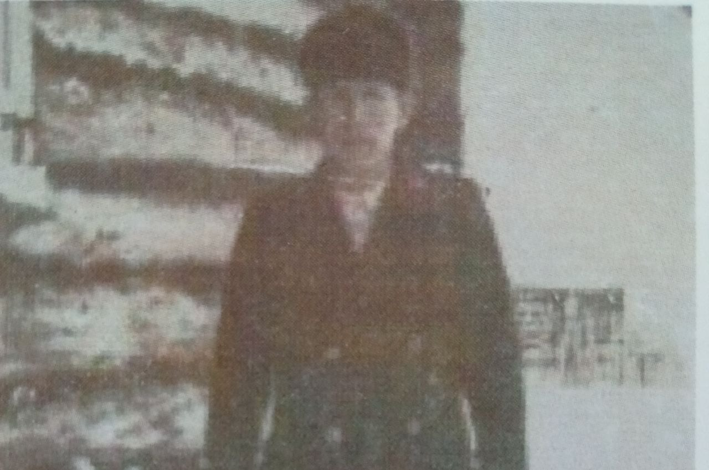
'">Головкин Иван Иосифович
Мгебришвили София
1917-1992
Крупникова Екатерина Ивановна
Мазалова Ирина
16.11.1914-25.11.2004
Гонтаренко Александр Семенович
Мазалова Ирина
25.08.1908-20.04.1994 года
Абрамов Петр Григорьевич
Некрасова Анастасия
Год рождения:1925 год
Мухин Владимир Павлович
Попов Евгений
12.05.1926-06.06.1990.
Кондрашов Артем Григорьевич
Тарчоков Тамирлан
Год рождения: 1910
Муравьев Николай Андрианович
Кондукторов Владислав
Год рождения: 12.04.1915
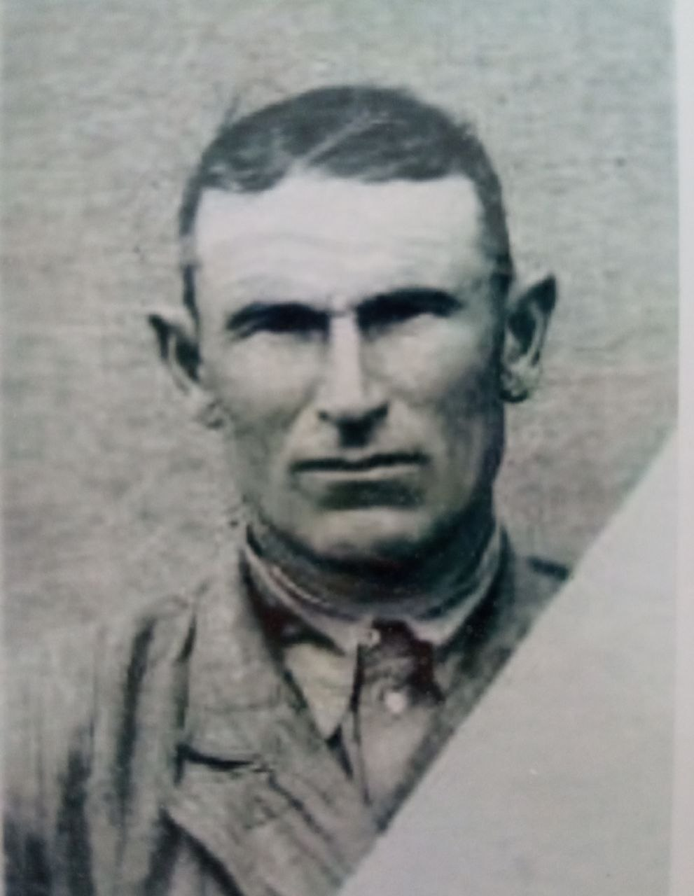
'">Глущенко Семен Матвеевич
Глущенко Екатерина
30.05.1914-1990
Соколов Петр Степанович
Соколова Ирина
Год рождения: 1905 г.
Маков Михаил Михайлович
Самуилов Павел
-
Авхачев Алексей Иванович
Курако Вячеслав
Год рождения: 1923 г.
Соколов Петр Степанович
Соколова Ирина,Соколова Кристина
Год рождения: 1905 г.
Негода Сергей Павлович
Камков Иван
1910-1998
Петрухин Семен Иванович
Чумакова Виктория
Год рождения: 07.09.1926
Кондукторов Иван Павлович
Кондукторов Владислав
Год рождения: 1920 г.
Кругов Александр Тимофеевич
Губарев Павел
26.08.1907-26.05. 1999
Новиков Яков Сидорович
Осипенко Ника
Год рождения: 1911
Пригорнев Николай Андреевич
Лукьянова Ольга
Год рождения: 1926 г.
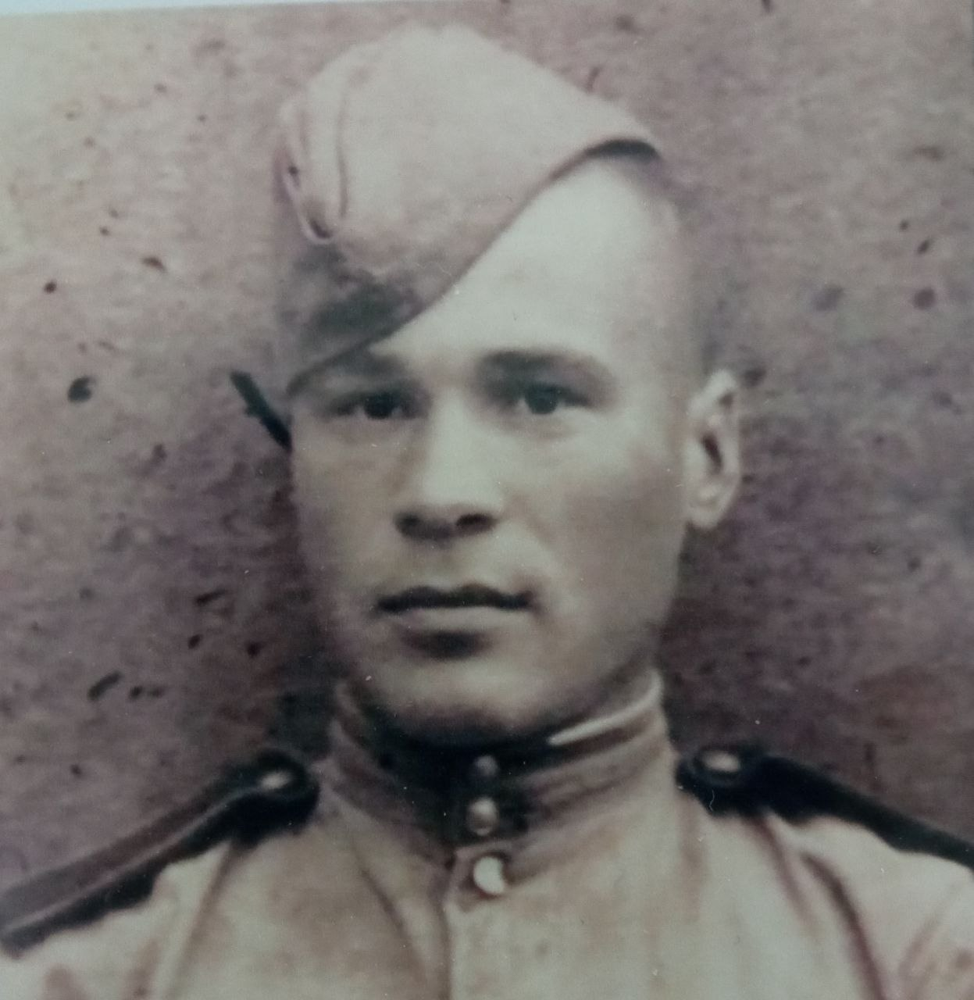
'">Паршин Алексей Ефимович
Ищенко Анна
Год рождения: 18.10.1920
Иванов Иван Иванович
Петров Олег
Год рождения:1923 г.
Нетипанов Иван Васильевич
Нетипанова Валерия
Год рождения: 1909 г.
Михайлова Олимпиада
Нетипанова Валерия
Год рождения: в июне 1919 года
Кадыров Абдуманап
Мирзажанова Умида
1917-2001
Ильин Алексей Егорович
Ильина Елизавета
Год рождения: 18.02.1925
Жданов Дмитрий Михайлович
Жданов Николай
Год рождения: 1924 г.
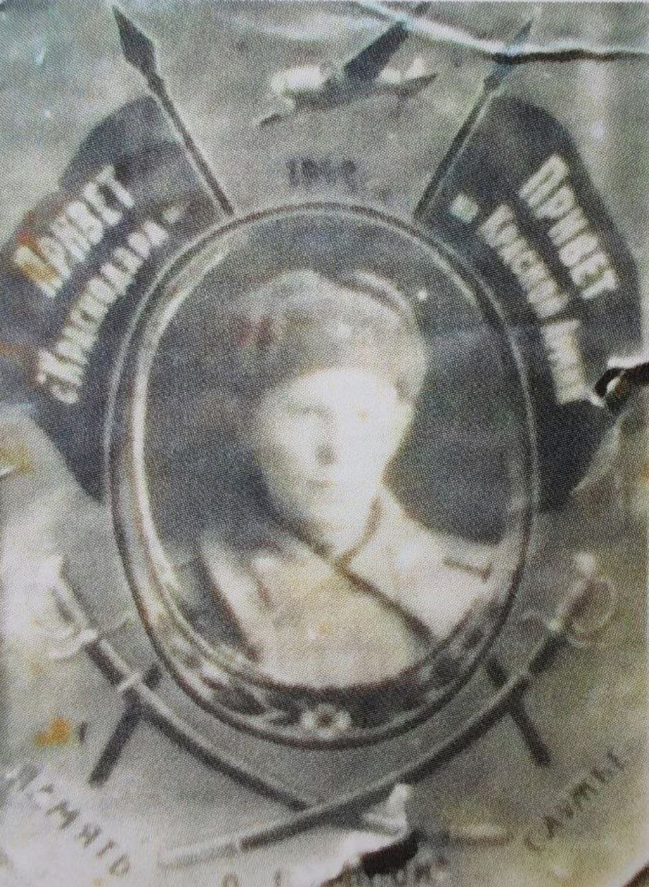
Лапин Михаил Сергеевич
-
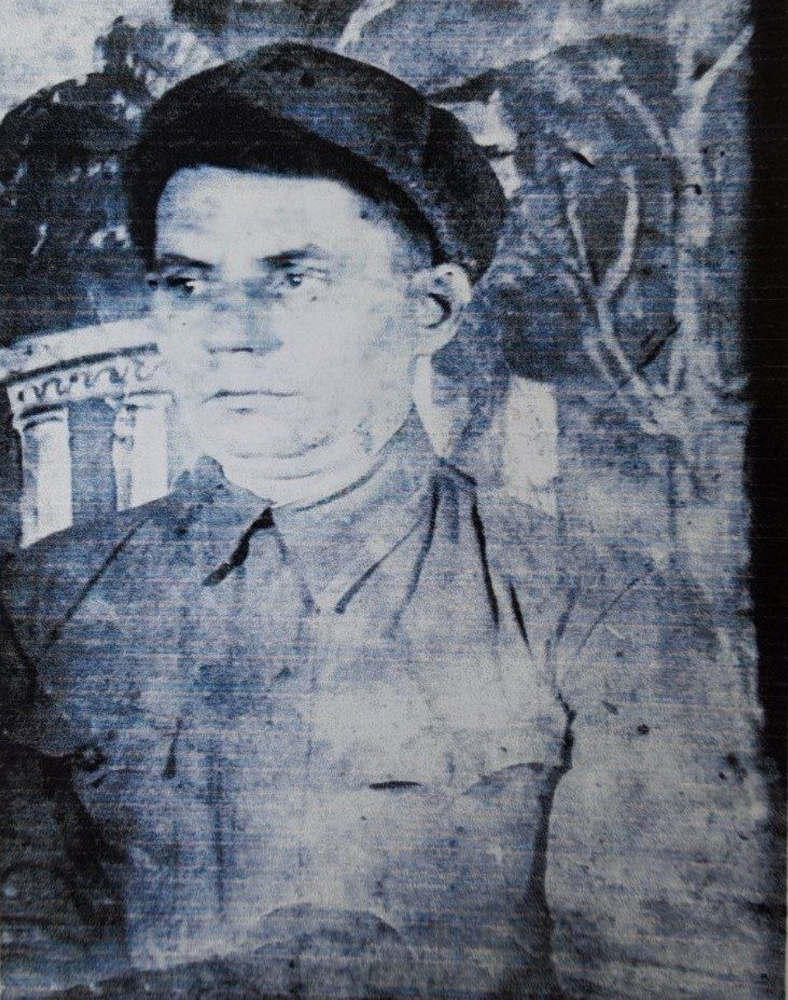
Филиппенков Константин Петрович
Филиппенкова Полина
Дата рождения:1904 г.
Ухов Василий Алексеевич
Попова Юлия
14.01.1913-июль 1999 г.
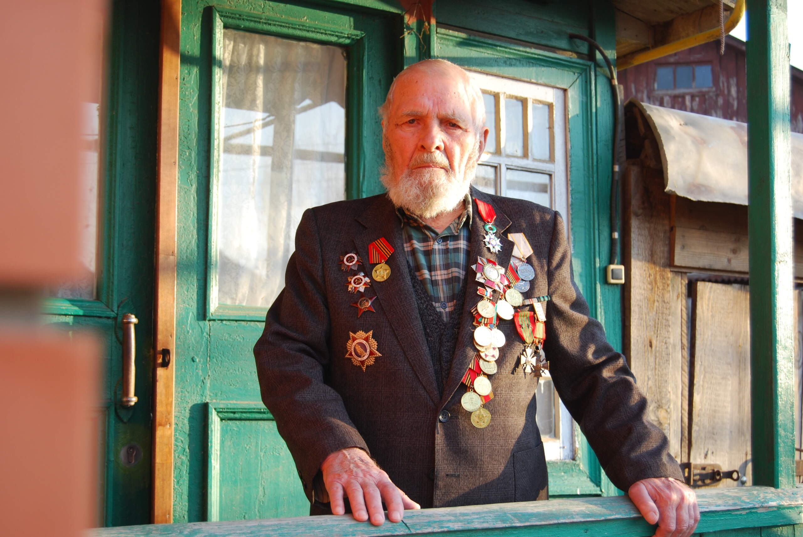
Никитин Александр Петрович
Лагутина Елена
20.09.1922-07.02.2014
Удальцов Александр Кузьмич
Махаева Василиса
1920-1943
Щербаков Николай Васильевич
Махаева Василиса
Дата рождения:1914
Щербакова (Удальцова) Анастасия Кузьминична
Махаева Василиса
Дата рождения:1916 г.
Удальцов Николай Кузьмич
Махаева Василиса
Дата рождения: 1923 г.
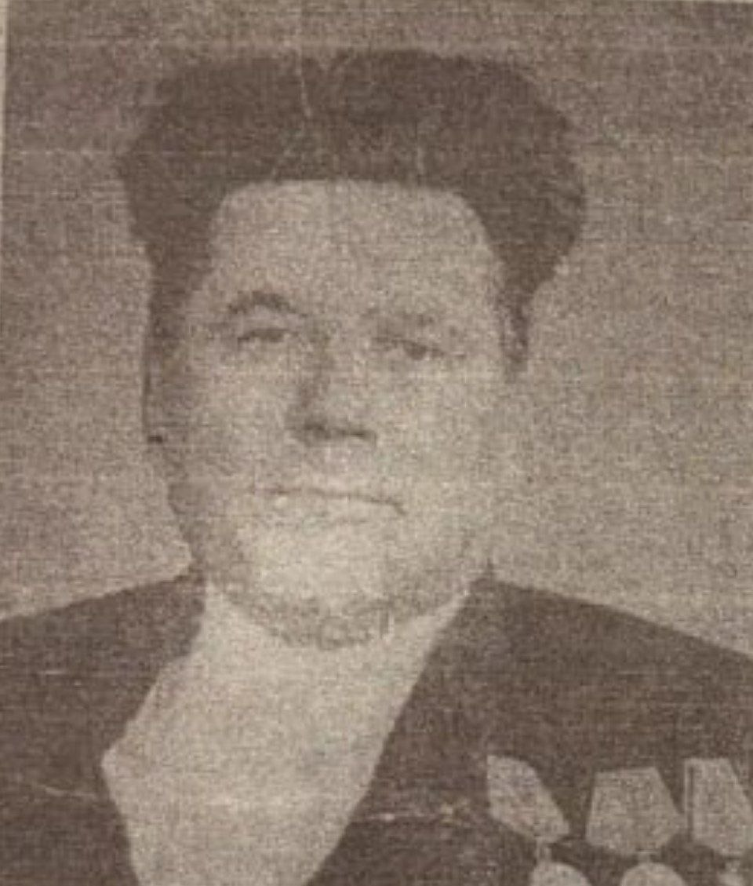
Яицкий Иван Григорьевич
Рудаков Вадим
1926-1985
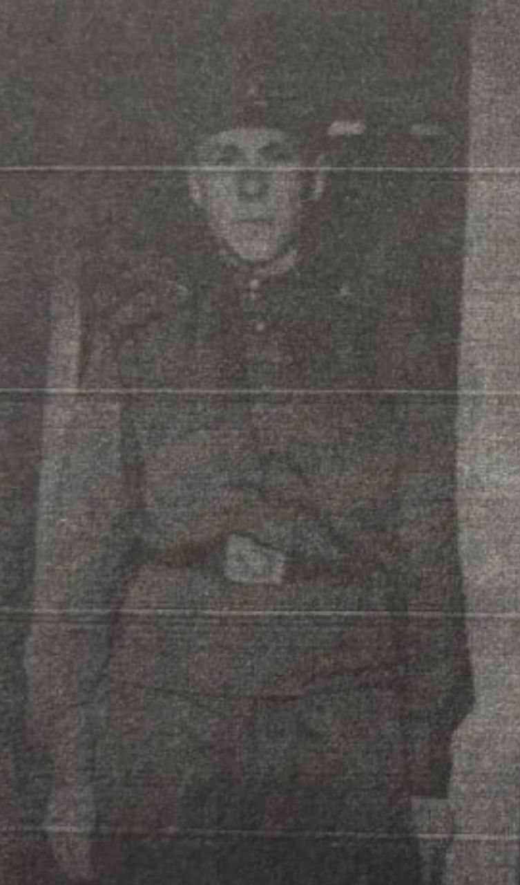
Максименко Михаил Иванович
Максименко Вера
14.08.1933-11.05.2021 гг
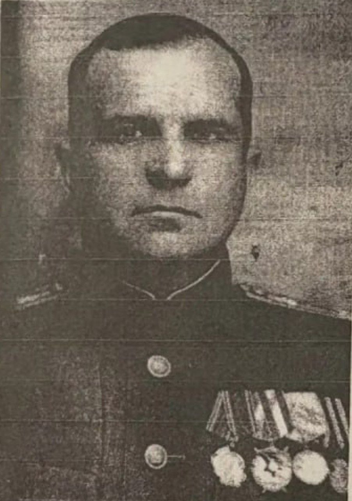
Карпенко Александр Акимович
Тюрникова Валентина
28.08.1900-04.04.1980
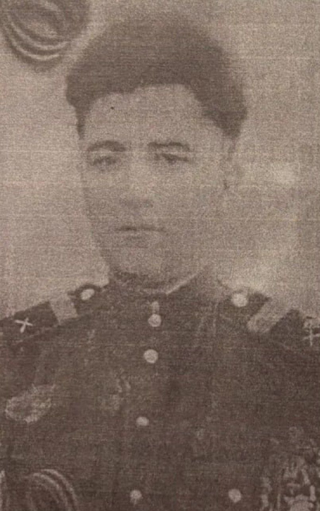
Тимченко Гавриил Пантелеевич
Тимченко Егор
17 марта 1926 – 1 апреля 1971
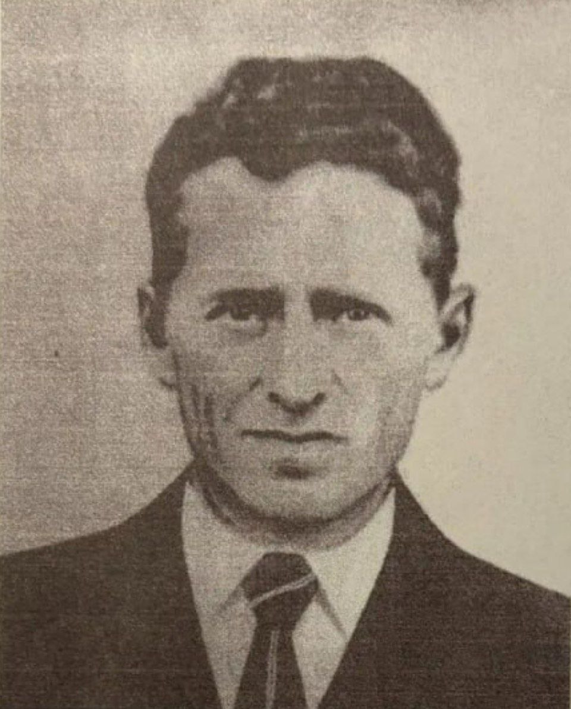
Берлин Степан Григорьевич
Крючков Михаил
18.07.1909-21.06.1975
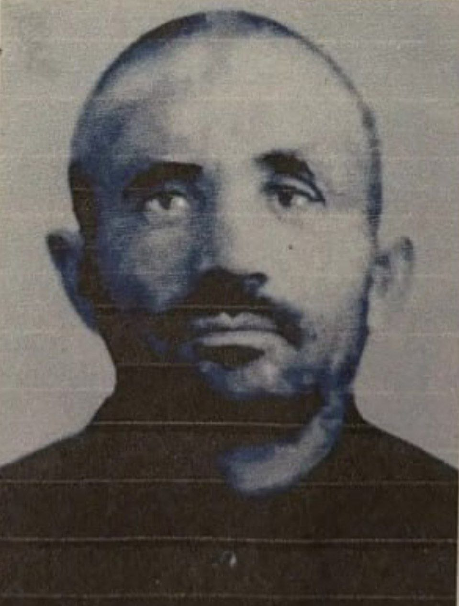
Камеркеев Акматали Кудайбергерович
Акматалиева Сауле
1917-1979